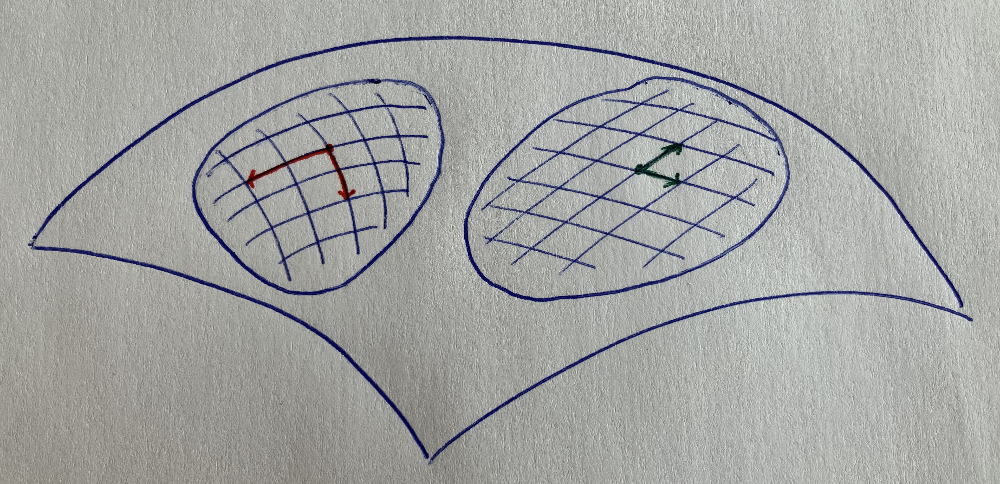
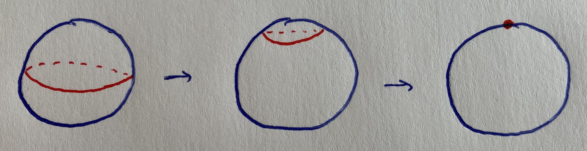
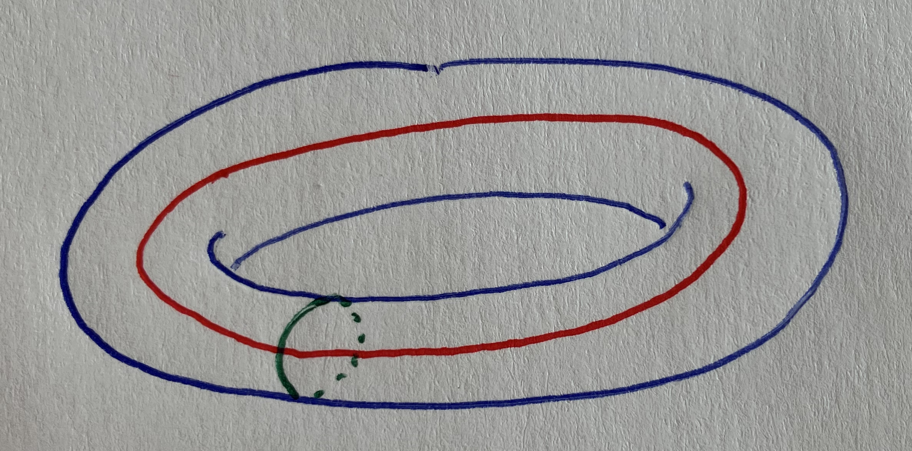
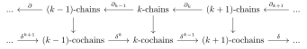

A peculiar interpretation of derivatives
The motivation for this article comes from William Thurston's superb essay On proof and progress in mathematics. In this discussion I will explore deep and intricate connections between mathematical concepts that are already hard on their own. My goal is to provide the best possible intuition for these ideas. To that end, I will resist the urge to use technical language and do my best to keep the discussion light and visual. However, for the sake of understanding, I must introduce two important abstract concepts: differential forms and cohomology.
As the title suggests, this essay is about derivatives.
You have certainly encountered derivatives before, and you may even be very familiar with them.
However, there is an important caveat.
You may know how to differentiate functions that live in Euclidean space, but how do you differentiate a function defined on, say, a Klein bottle (a surface with no inside, no outside and no boundary)?
This might be strange at first, but the question is very important! Mathematicians and physicists work with curved, hyperbolic, ..., all sorts of weird spaces all the time!
For example, imagine you want to know the speed of a probe that you have sent into space.
Well this probe now lives in a curved space (spacetime) and you have to take the curvature of spacetime into account in your calculations.
The question then becomes: how do we do calculus on weird spaces? How can we make sense of a "rate of change", a "flow" or an "area" when there is no nice grid of straight lines to rely on? A big part of the answer is differential forms! Essentially, these tools are used to measure something geometric: how fast a quantity changes along a direction, how much of a flow passes through a surface, and so on... Let me show you concretely what I mean.
Take a function, say \(f(x,y) = x^2+y^2\), and think of it as the altitude of a landscape above the point \((x,y)\). There are two objects that describe how \(f\) changes: its differential \(df\) and its gradient \(\nabla f\). If you have ever taken a calculus course, you might tell me that these are the same thing written in two ways: \(df = 2x \: dx + 2y \: dy\) and \(\nabla f = (2x, 2y)\). The coefficients are indeed identical. But this is a coincidence of the setting we are working in: the two objects are actually of a different nature.
The differential \(df\) is a machine that eats a direction and returns a number. Given a vector \(v = (v_x, v_y)\), it outputs \(df(v) = 2x\,v_x + 2y\,v_y\), the rate at which \(f\) changes when you move in the direction \(v\). To do its job, \(df\) needs no knowledge of lengths or angles; it only needs to know how \(f\) varies. Think of the contour lines on a hiking map: they contain everything there is to know about \(df\).
The gradient \(\nabla f = 2x \frac{\partial}{\partial x} + 2y \frac{\partial}{\partial y}\) is a different kind of object: it is an arrow (a vector living in the tangent space) pointing in the direction of steepest ascent. And "steepest" hides a comparison: among all steps of the same length, which one makes you climb the most? To answer that question, you need to know what "the same length" means. (Equivalently, the gradient is perpendicular to the contour lines, and "perpendicular" is a statement about angles.) Lengths and angles might not even be the same in different areas of our space. The rule that tells you how to measure lengths and angles is called a metric.

Here is a simple example.
Imagine a map drawn on a stretched grid: one unit to the east is 1 km, but one unit to the north is 2 km.
Take the simplest possible landscape, \(f(x,y) = x + y\).
Moving one unit east or one unit north raises the altitude by the same amount, so \(df = dx + dy\), whatever the grid looks like: the contour lines don't care how we measure distances.
But walk one kilometre in each direction and you gain \(1\) going east, but only \(\frac{1}{2}\) going north.
The steepest way up therefore tilts towards the east, and with this metric \(\nabla f = \frac{\partial}{\partial x} + \frac{1}{4}\frac{\partial}{\partial y}\) instead of \(\frac{\partial}{\partial x} + \frac{\partial}{\partial y}\)
(one factor \(\frac{1}{2}\) because northward steps are less rewarding, another because the arrow \(\frac{\partial}{\partial y}\) is itself 2 km long).
Same landscape, same differential, different gradient.
So where was the metric hiding in your calculus course?
The metric's job is to convert an arrow into a measuring machine and back, and the gradient is precisely the arrow that converts into \(df\).
With the usual Euclidean metric (the dot product), this conversion leaves the coefficients unchanged, which is why \(df\) and \(\nabla f\) look identical in \(\mathbb{R}^n\).
On a curved space, where the metric varies from point to point, they can look very different.
So the takeaway here is that the differential does not depend on the metric, but the gradient does.
This is why we use differential forms: they describe derivatives intrinsically, that is to say, without assuming a metric. I will not give a rigorous definition of differential forms, because this would require introducing something called the exterior algebra (which really is the correct language for describing areas, volumes and their higher-dimensional analogues). Rather, I will simply try to give a good picture of what they are.
As it turns out, we have already met a differential \(1\)-form, the differential \(df\) above (surprise!). Recall that it takes one vector and returns a number. But maybe we don't want to measure along directions anymore, maybe we want to measure areas or volumes. This is what the \(2\)-form \(dx \wedge dy\) and the \(3\)-form \(dx \wedge dy \wedge dz\) do. The symbol \(\wedge\) is called the exterior product, and it is what allows us to combine directions into areas, areas into volumes, and so on... For our purposes, this is enough to remember.
Now that we have a way of describing derivatives without needing a metric, we can start doing calculus! So we need some kind of operation that connects differential forms of various degrees. That operation is called the exterior derivative. It is denoted \(d : k\text{-forms} \rightarrow (k+1)\text{-forms}\), and it is really the generalisation of differentiation we were looking for. Here is how it works (roughly):
- For a function \(f(x,y)\) (a \(0\)-form), it simply outputs its differential \(df\) (a \(1\)-form), which in \(\mathbb{R}^2\) we can identify with the gradient using the Euclidean metric, as above.
- For a \(1\)-form \(\alpha = f(x,y)\,dx + g(x,y)\,dy\), the exterior derivative gives the \(2\)-form \(d\alpha = \left(\frac{\partial g}{\partial x} - \frac{\partial f}{\partial y}\right) dx \wedge dy.\) Concretely, it measures how much \(\alpha\) "swirls" around each point: go around a tiny loop, add up what \(\alpha\) measures along the way, and divide by the area of the loop. Similar to the curl \(\nabla \times F\) (in \(\mathbb{R}^3\)).
- For a \(2\)-form in \(\mathbb{R}^3\), \(\beta = p(x,y,z)\, dy \wedge dz + q(x,y,z)\, dz \wedge dx + r(x,y,z)\, dx \wedge dy\), we obtain the \(3\)-form \(d\beta = \left(\frac{\partial p}{\partial x} + \frac{\partial q}{\partial y} + \frac{\partial r}{\partial z}\right) dx \wedge dy \wedge dz\). It measures how much "flow" escapes from a tiny box, divided by its volume. This is exactly the divergence.
- And so forth...
Now that we roughly know what differential forms are, let's move on.
What is cohomology? Weird name, right?
First of all, there are two hidden notions here, homology and cohomology.
And they are actually two sides of the same coin, with many "iterations" of it, a little bit like there are
multiple currencies that use coins.
Concretely, homology is the study of holes.
It gives us a way to define what a hole is and it allows us to distinguish between different kinds of holes and
how to find them.
Now, you may argue that you already know what a hole is! For example, if you puncture a sheet of paper, well, you have a hole. And you'd be half right. The issue here is that we want to understand every kind of hole, so higher dimensional holes as well. I will not explain what it means to have a \(0,1,2, ...\)-dimensional hole, but I will give you two examples in which we will see how we can detect holes.
Imagine you have a sphere, a hollow ball if you will. What we can do to test for the existence of holes on that sphere is to consider a loop on its surface (like putting a rubber band around a huge ping-pong ball) and move it around. Imagine your rubber band is magic and can shrink all the way down to a point. On the sphere, you can always do this: just slide it towards one side until it disappears into a single point! (look at the picture) This exactly means that the sphere does not have a \(1\)-dimensional hole.

Now in place of a sphere, consider a torus (or an inflated swim ring), and attach a rubber band to it. The situation here is a bit different: there are two genuinely different ways to put a rubber band on a swim ring. You can wrap it around the tube, like a ring on a finger, or you can lay it along the ring so that it goes all the way around the central hole (do you get it from picture below?). And this is a completely different situation from the one we had with the sphere. For the torus, it is impossible to shrink either rubber band into a single point without lifting and breaking it (you can try if you want!). Informally, this means that the torus has two \(1\)-dimensional holes. And this actually tells us a lot about the structure of the inflatable swim ring, it hints at the fact that the torus is "made of" two circles (mathematically, we write \(\mathbb{T}\cong S^1 \times S^1\)).

So far, we have checked for \(1\)-dimensional holes, but what about the hollowness of the sphere and the torus? Are they holes as well? How do we detect that?
Well, there is a way to describe and generalise this process formally. The idea is to use chains, cycles and boundaries. Suppose we have a (reasonable topological) space \(X\) (think of a ping-pong ball, an inflatable swim ring, even spacetime! or whatever smooth space you like). The objects replacing loops here are called \(k\)-chains. They can be thought of as a set of \(k\)-dimensional edges (with a direction), that you can attach together (at their endpoints). You can think of a \(0\)-chain as a collection of points, a \(1\)-chain may be something like a sequence of arrows (a directed graph if you will), a \(2\)-chain a set of planes attached to one another and so on...
Now, the idea is that you can "sum" together all the pieces of a \(k\)-chain, using its endpoints (which are \((k-1)\)-chains themselves) as a way of tracking them.
The generalised notion for endpoints here is the boundary.
In a way, the boundary expresses for every piece in the \(k\)-chain, where it starts negatively and where it ends positively.
Then, when the boundary is zero (as a sum, remember), we say that we have a \(k\)-cycle (meaning that the endpoints of our whole \(k\)-chain meet, so it's a loop).
And surprise surprise, like how loops helped us detect holes, now \(k\)-cycles will help us detect \(k\)-dimensional holes!
PICTURE (boundary and k-forms)
Let me repeat everything but with the correct wording and notation. Let \(C_k(X)\) be a set whose elements \(a\) are \(k\)-chains. And let \(\partial_k: C_k(X) \rightarrow C_{k-1}(X)\) be a rule sending a \(k\)-chain to its boundary. The boundary also has an extra rule, applying it twice cancels everything (\(\partial_{k-1} \circ \partial_k = 0\)). Does this seem familiar? Notice that the boundary of a \((k+1)\)-chain is also a \(k\)-cycle, since applying \(\partial\) twice gives zero (so \(\text{im}(\partial_{k+1})\subset \text{ker}(\partial_k)\)). Finally, we can define the \(n\)-th homology group of \(X\), written \(H_n(X)\); $$ H_n(X) := \frac{ \{ a \in C_n(X) \mid \partial_n a = 0 \} }{ \{ \partial_{n+1}b \mid b \in C_{n+1}(X) \} } = \frac{n\text{-cycles}}{n\text{-boundaries}}.$$ In words it says: a hole is a cycle that is not the boundary of anything. On the sphere, the rubber band encloses a cap, so it is a boundary and detects nothing. The sphere itself is a \(2\)-cycle (a closed surface with no boundary), and on the sphere it doesn't enclose any solid piece, so it detects a \(2\)-dimensional hole. On the torus, the band around the tube encloses nothing on the surface, so it detects a hole. When the conditions are nice enough (when the coefficients are real numbers), \(H_n(X)\) is actually a vector space, and \(dim H_n(X)\) is exactly the number of \(n\)-dimensional holes of the space \(X\). A small caveat here is that \(H_0(X)\) counts connected pieces of \(X\) rather than holes.
Now cohomology on the other hand asks questions about functions
(this is usually how we think about objects dually,
when considering the dual object, we usually write it with a co in front).
Instead of asking what cycles the space contains, we ask what functions/rules can be put on those cycles and what do they tell us about the space?
So for example instead of defining an \(i\)-chain as above, we will have an \(i\)-cochain which is a function that respects sums of chains
\(f:C_i(X) \rightarrow R\) taking \(i\)-chains as input and returning something in \(R\), a number set.
When working dually, is that we have to reverse the arrows (see diagram below, the meaning of this can be made very precise using category theory).
Here what I mean is that our coboundary operator \(\delta^i\) takes an \(i\)-cochain in \(C^{i}\) and sends it to
an \((i+1)\)-cochain in \(C^{i+1}\).
A common practice people often do in algebraic topology and category theory is to draw diagrams.
PICTURE would be better

We have thus defined cochains and a coboundary operator. So like before, we can now define cocycles (checking for \(0\) coboundary) and hence the cohomology of a space \(X\), written $$ H^n(X) := \frac{ \{ \alpha \in C^n(X) \mid \delta^n\alpha = 0 \} }{ \{ \delta^{n-1}\beta \mid \beta \in C^{n-1}(X) \} } = \frac{n\text{-cocycles}}{n\text{-coboundaries}} $$
One of the many currencies that exist in cohomology is the de Rham cohomology. This is where differential forms and cohomology theory merge, the heart of the article. In place of taking cochains as abstract objects, we now say that \(k\)-cochains are \(k\)-forms and that the coboundary operator is the exterior derivative \(d\). Hopefully, I have introduced differential forms in a way that convinces you that what we are doing here is legal (\(d\) takes \(k\)-forms to \((k+1)\)-forms, raising the degree just like \(\delta\) does, while \(\partial\) lowers it. So forms naturally sit on the "co" side).
The last step is to make sense of cocycles in this context. For that, let me distinguish two kinds of differential forms. We call a differential form closed if its exterior derivative is zero (it has no "swirl") and exact if it's the derivative of something ( \(\omega = d\eta\) ). Since \(d(d\eta) = 0\), every exact form is closed. The interesting question is the converse: if a form has no swirl anywhere, is it necessarily the derivative of something? This is really the same reasoning we were having when thinking about cohomology. This structure is what we call the de Rham cohomology and it is denoted and defined as, $$ H_{dR}^n(X) := \frac{ \{ \omega \mid d\omega = 0\} }{ \{ d\eta \mid \eta \text{ an } (n-1)\text{-form} \} } = \frac{ \text{closed } n\text{-forms} }{ \text{exact } n\text{-forms}}.$$
Finally, let me state the main theorem from de Rham himself.
Theorem: (de Rham) For \(X\) a smooth \(n\)-dimensional object, the de Rham cohomology and the classical cohomology with real coefficients are the same (they are naturally isomorphic).
And this identification is made possible by the famous theorem of Stokes.
With differential forms, it generalises the fundamental theorem of calculus, Green's theorem and Stokes' theorem over surfaces:
Theorem: (Stokes) \(X\) is a smooth \(n\)-dimensional object that has a boundary denoted by \(\partial X\) and \(\omega\) is an \((n-1)\)-form on \(X\). Then $$ \int_X d\omega = \int_{\partial X} \omega.$$ In other words, measuring the derivative of \(\omega\) over a piece of space is the same as measuring \(\omega\) itself on the edge of that piece.
Concretely, integration turns every \(k\)-form into a \(k\)-cochain (indeed, you feed it a chain and get back a number). And Stokes' theorem explains how \(d\) turns into the coboundary operator \(\delta\), closed forms become cocycles and exact forms are coboundaries. So we have a map \(H^n_{dR}(X) \rightarrow H^n(X, \mathbb{R})\). In a sense, Stokes provides the bridge and de Rham says the bridge is perfect.
So we end up with some unexpected associations. Derivatives and boundaries turn out to be two faces of the same idea: the derivative of a derivative is zero because the boundary of a boundary is empty, and a closed form that refuses to be a derivative is the shadow of a hole that refuses to be a boundary. Calculus, the most local tool we have, ends up seeing the most global feature of a space: its shape.